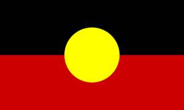
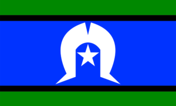

Despite their differences, Aboriginal and Torres Strait Islander peoples have had many shared experiences of colonisation. These experiences have led to negative impacts on their cultural, psychosocial and physical well-being. Like Aboriginal people, Torres Strait Islanders’ experiences with colonisation resulted in a loss of land, sovereignty, culture and civil rights and increased control by outsiders. Aboriginal people and Torres Strait Islanders were not allowed to vote in Australian federal elections until 1962 or in Queensland state elections until 1965. The languages, dances, songs, stories and spiritual beliefs of Aboriginal people and Torres Strait Islanders remain integral to their culture. Aboriginal people and Torres Strait Islanders have their own flags.
|  |  |
| The Aboriginal flag was designed by Harold Thomas, a Luritja man of Central Australia. It was first flown on National Aboriginal Day in Adelaide in 1971. | The Torres Strait Islander flag was designed in 1992 by Bernard Namok Snr of Thursday Island and became an official Australian flag in 1995. |